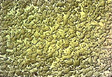

服務項目 Service
「創新突破，品質服務」為本公司經營理念，經歷30年來的努力和成長，我們有信心秉持最高品質，在客戶要求的時限內完成客戶所託付的任務。 鍑興致力研發雙合金螺桿和料管多年，使用的FSB合金已有相當成熟的水準，合金種類和特性如下所述：
| 母材料之特性與應用 | ||
|---|---|---|
| 母材 | 特性 | 應用方向 |
| S45C | HS 24~28 | 押出機用 |
| SCM440 | HS 28~40 | 射出及押出機用 |
| FSB-S07 | HS 35~45 | 高射壓用 |
| SUS316 | HS 18~28 | 抗腐蝕用 |
| 合金種類及特性 | |
|---|---|
|
合金及主要成分：FSB-10 Fe-Ni-B 硬度（洛式）：HRC 54~60 耐磨性：D 抗腐蝕性：D 溫度範圍：≤ 400 適用樹脂種類： 適用樹脂：PE、PP、APS、AS、PS、TPE 腐蝕性：小 玻璃纖維含量：＜30％ |
|
 |
合金及主要成分：FSB-12 Fe-Ni-B 硬度（洛式）：HRC 56~62 耐磨性：B 抗腐蝕性：C 溫度範圍：≤ 400 適用樹脂種類： 適用樹脂：PE、PP、APS、AS、PS、TPE 腐蝕性：中 玻璃纖維含量：＜30％ 熱固型樹脂：EP、PU、PE、UP 適用工程樹脂：PA、PC 腐蝕性：中 玻璃纖維含量：＜30％ |
|
合金及主要成分：FSB-20 Fe-Ni-CU-B+Cr,Mo,V 硬度（洛式）：HRC 62~68 耐磨性：A 抗腐蝕性：B 溫度範圍：≤ 450 適用樹脂種類： 適用樹脂：PE、PP、APS、AS、PS、TPE 腐蝕性：中 玻璃纖維含量：＜30％ 鹽化物樹脂：PVC 適用工程樹脂：PA、PC：PA、PC、PBT、PET、POM、PPO 腐蝕性：大 玻璃纖維含量：＜30％ 特殊工程樹脂：PEEK、LCP、PPS、PAR、PES |
|
|  |
合金及主要成分：FSB-90 Ni-Co-Cr-B+WC 硬度（洛式）：HRC 60~66 耐磨性：A+ 抗腐蝕性：A 溫度範圍：≤ 450 適用樹脂種類： 適用樹脂：PE、PP、APS、AS、PS、TPE 腐蝕性添加物比率高者 玻璃纖維含量：＜40％ 適用工程樹脂：PA、PC：PA、PC、PBT、PET、POM、PPO 腐蝕性：大 玻璃纖維含量：＜40％ 特殊工程樹脂：PEEK、LCP、PPS、PAR、PES |
除了設計製造各式的螺桿和料管外，鍑興也依客戶要求提供各種金屬件深孔加工及深孔鑽工作機販賣之服務，客制化服務讓客戶滿意是我們的原則。
我司有超過二十五年之研發深孔鑽工作母機經驗，販售之深孔鑽工作母機為本公司自行研發設計，在台灣製造生產，品質獲得內外銷一至好評。目前最新型號為FS-BTA450，標準加工尺寸為內徑18~250mm，長度可至4500mm。
本司也秉持著品質第一的原則引進德國M1602深孔鑽工作母機，以最完善之成品規格完成客戶之雙螺桿料管，雙螺桿料管和螺桿為本公司目前熱銷之產品。
金屬加工規格
螺桿
外徑範圍：Ø8~350mm
長度：6000mm
材質：DIN.8550, SACM-645, SCM-440, SUS420J2, SKD-61
螺桿
外徑範圍：Ø8~350mm
長度：6000mm
材質：DIN.8550, SACM-645, SCM-440, SUS420J2, SKD-61
雙合金離心鑄造爐
PTA牙頂噴銲
雙合金螺桿
FS-BTA450
M1602